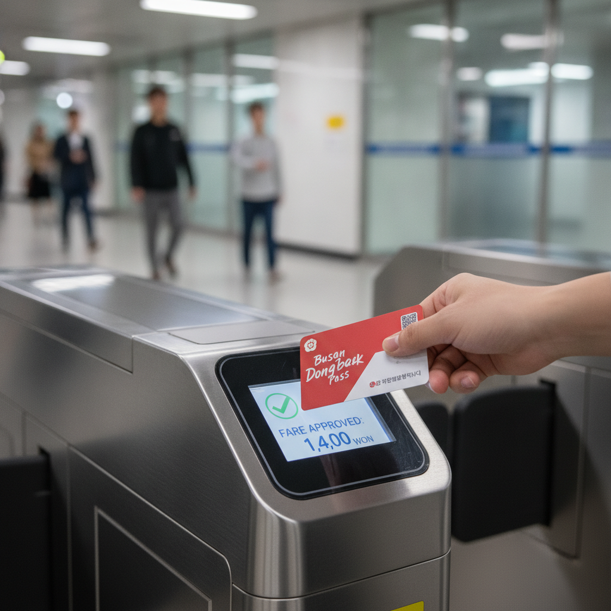
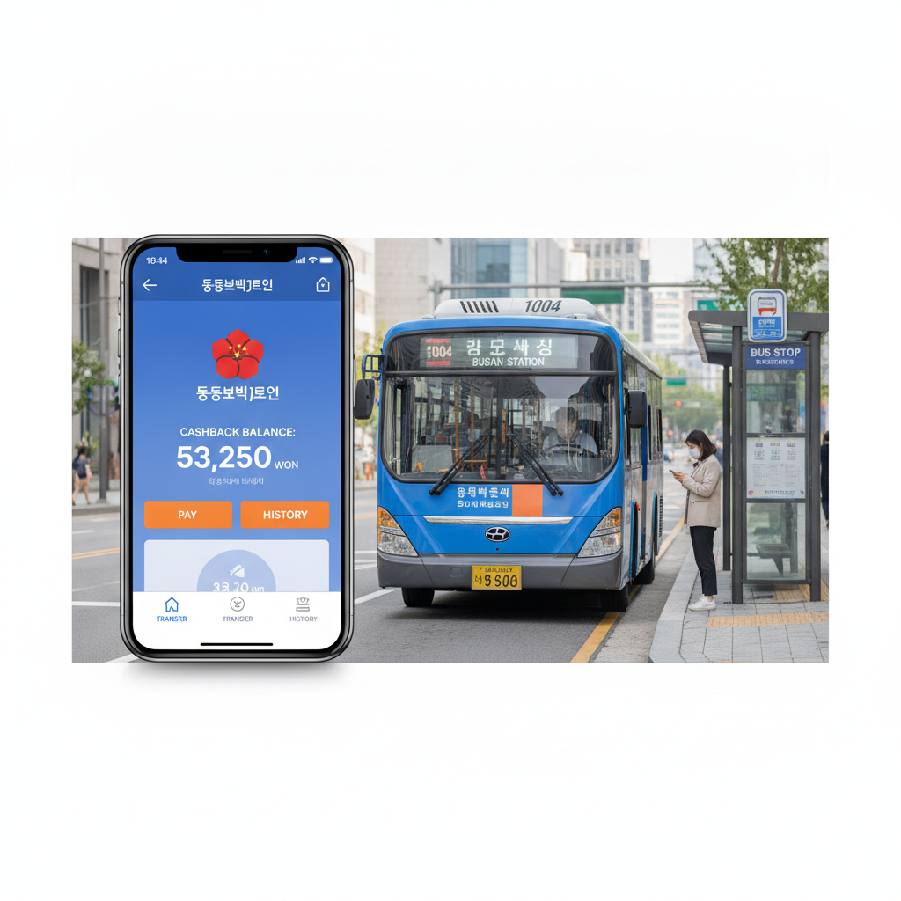

부산 동백패스 vs K-패스 환급 비교 — 월 대중교통 이용액별 손익분기 계산표와 중복 여부 체크리스트
부산에 거주하거나 부산으로 통근·통학하는 이용자라면 대중교통비 환급 제도로 부산시 자체 제도인 '동백패스'와 정부 국토교통부의 'K-패스' 중 어느 쪽이 더 유리한지 고민하게 됩니다. 결론부터 정리하면, 일반 성인 기준 월 대중교통 지출액이 약 5만 6천 원을 초과하면 동백패스가 유리하고, 만 19~34세 청년층은 월 6만 4천 원 초과 시점부터 동백패스의 환급액이 더 커집니다.
동백패스는 월 4만 5천 원 초과 이용액에 대해 월 최대 4만 5천 원까지 100% 동백전 캐시백으로 돌려주며, K-패스는 월 15회 이상 이용 시 지출 총액의 20%(청년 30%·저소득 53%)를 현금 환급해 주는 구조입니다.
월 이용 금액대별 실제 환급액 계산표와 부산 시내버스·도시철도·동해선 환승 적용 여부, 그리고 두 카드의 중복 환급 가능 여부 팩트체크를 확인해 보세요.

부산 도시철도 게이트에서 단말기에 태그되는 동백패스 후불교통카드 / AI 제작 이미지
01 | 부산 시민과 방문객의 대중교통비 절약 양대 축 동백패스와 K-패스
고물가 시대에 출퇴근 및 등하교 대중교통비는 가계 지출에서 무시할 수 없는 고정 비용입니다. 부산광역시는 전국 지자체 중 가장 선도적으로 대중교통 통합할인제인 '동백패스'를 도입하여 시행해 오고 있습니다.
동시에 국토교통부 대도시권광역교통위원회의 전국 단위 대중교통 환급 카드인 'K-패스'가 본격 정착되면서 부산 시민들은 두 가지 강력한 교통비 지원 카드를 손에 쥐게 되었습니다.
하지만 두 제도는 지원 방식, 기준 금액, 정산 주기, 환급 수단(지역화폐 동백전 캐시백 vs 계좌 입금)에서 확연한 차이를 보이기 때문에 자신의 이동 패턴에 맞추어 카드를 정확히 선택해야 최대 혜택을 누릴 수 있습니다.
02 | 부산 동백패스의 기본 환급 구조와 지원 대상(월 4만 5천 원 초과분 최대 4만 5천 원 환급)
부산 동백패스는 부산시 대중교통을 월 45,000원 이상 이용할 경우, 45,000원을 초과한 금액을 전액(100%) 환급해 주는 구조입니다. 환급 한도는 월 최대 45,000원입니다.
즉, 한 달 동안 부산 대중교통비로 90,000원을 지출했다면 45,000원을 초과한 금액인 45,000원 전액을 그대로 돌려받게 되어, 실제 본인 부담금은 45,000원에 불과하게 됩니다.
환급금은 매월 1일부터 말일까지의 이용 내역을 정산하여 다음 달 10일경 본인의 '동백전' 계좌로 정책지원금 캐시백 형태로 충전됩니다. 지급된 캐시백은 부산 시내의 식당, 카페, 마트, 병원 등 동백전 가맹점에서 현금처럼 자유롭게 결제할 수 있습니다.
03 | 전국 호환 K-패스의 환급 혜택(일반 20%·청년 30%·저소득 53%)과 적립 기준
정부의 K-패스는 월 15회 이상 대중교통을 이용할 때 지출한 총금액에 대해 일정 비율을 고정적으로 환급해 주는 제도입니다. 최대 월 60회 이용분까지 적립됩니다.
환급률은 일반 성인 20%, 청년층(만 19세~34세) 30%, 기초생활수급자 및 차상위계층 53%로 차등 적용됩니다. 예를 들어 청년이 월 70,000원을 이용했다면 30%인 21,000원을 돌려받습니다.
K-패스의 가장 큰 강점은 '전국 호환성'입니다. 부산 대중교통뿐만 아니라 서울·경기 지하철, KTX·SRT를 제외한 광역버스, 시외 시내버스 등 전국 어디서 이용하더라도 모두 실적으로 합산되어 카드 결제계좌로 현금 환급(또는 신용카드 청구할인)됩니다.
04 | 월 대중교통 이용 금액대별(5만·7만·9만·12만 원) 환급액 손익분기 비교 계산표
자신의 월평균 대중교통 지출 금액에 따라 동백패스와 K-패스 중 어느 쪽의 실수령 환급액이 더 큰지 명확하게 비교해 드립니다.
| 월 교통비 지출액 |
동백패스 환급액 (전 계층 동일) |
K-패스 일반 (20%) |
K-패스 청년 (30%) |
어느 패스가 더 유리한가? |
| 40,000원 |
0원 (기준 미달) |
8,000원 |
12,000원 |
K-패스 압승 (동백패스 4.5만 원 미만 환급 0원) |
| 50,000원 |
5,000원 |
10,000원 |
15,000원 |
K-패스 유리 (일반 +5,000원 / 청년 +10,000원) |
| 60,000원 |
15,000원 |
12,000원 |
18,000원 |
일반은 동백패스 유리 / 청년은 K-패스 유리 |
| 70,000원 |
25,000원 |
14,000원 |
21,000원 |
동백패스 전 계층 유리 (일반 +11,000원 / 청년 +4,000원) |
| 90,000원 |
45,000원 (최대 한도) |
18,000원 |
27,000원 |
동백패스 압도적 유리 (최대 4.5만 원 전액 환급) |
| 110,000원 |
45,000원 (한도 도달) |
22,000원 |
33,000원 |
동백패스 유리 (K-패스 청년 대비 +12,000원 이득) |
위 계산표에서 보듯, 월 7만 원 이상 부산 대중교통을 정기적으로 이용하는 직장인이나 대학생이라면 연령과 관계없이 동백패스를 이용하는 것이 무조건 이득입니다. 반면 주 2~3회 외출하는 라이트 유저(월 5만 원 이하)라면 K-패스가 훨씬 안전하고 유리합니다.

동백전 모바일 앱 화면의 대중교통 환급 내역과 부산 시내버스 정류장 풍경 / AI 제작 이미지
05 | 부산 시내버스·도시철도·동해선·김해경전철 환승 시 적용 대상 교통수단 비교
동백패스를 이용할 때 반드시 주의해야 할 점은 '부산시 관할 대중교통 수단'에 한정되어 실적이 인정된다는 사실입니다.
동백패스 인정 수단은 부산 시내버스, 마을버스, 부산 도시철도(1~4호선), 동해선 광역전철(부산 시내 구간), 부산-김해경전철입니다. 부산 대중교통 간의 환승 할인 혜택도 정상 적용되며 실적에 누적됩니다.
반면 동백패스 미인정 수단으로는 2000번 등 거제 방면 시외직행 좌석버스, 울산·경남 시외버스, 고속버스, KTX 및 일반 철도, 택시가 있습니다. 타 시·도 구간을 오가는 광역 이동이 잦다면 전국 대중교통이 모두 인정되는 K-패스를 사용하는 것이 안전합니다.
06 | 두 제도의 동시 중복 가입 및 동일 카드 중복 환급 가능 여부 팩트체크
많은 분들이 가장 궁금해하는 핵심 질문은 "동백패스와 K-패스를 동시에 쓸 수 있는가?"입니다.
국토교통부와 부산시 시스템상 하나의 동일한 교통카드로 두 제도의 환급을 동시에 이중 수령하는 것은 불가능합니다. 카드 결제 데이터가 한쪽 시스템에 매칭되면 중복 환급이 원천 차단됩니다.
하지만 '카드를 2장 분리하여 상황별로 나누어 쓰는 전략'은 완벽하게 가능합니다. 예를 들어 부산 시내 출퇴근용으로는 동백패스 등록 카드를 사용하고, 주말 서울·경기 출장이나 타 지역 여행 시에는 K-패스 전용 카드를 태그하는 방식으로 두 카드의 장점을 모두 누릴 수 있습니다.
07 | 청소년(만 13~18세) 전용 동백패스 지원 기준과 성인 패와의 차이점
부산시는 2024년 7월부터 청소년 교통복지를 위해 '청소년 동백패스'를 확대 시행하고 있습니다. 지원 대상은 부산에 거주하는 만 13세부터 18세 청소년입니다.
청소년 동백패스는 성인 기준보다 기준선이 대폭 낮아져, 월 25,000원을 초과하여 이용한 금액에 대해 월 최대 25,000원까지 전액 동백전으로 환급해 줍니다.
청소년 후불교통카드 또는 선불형 청소년 동백전 카드를 발급받은 뒤 동백전 앱에서 청소년 패스 등록을 마치면 자동으로 적용되며, 매월 최대 2만 5천 원의 교통비를 아낄 수 있어 중·고등학생 자녀를 둔 학부모에게 큰 호응을 얻고 있습니다.
08 | 동백전 앱을 통한 동백패스 등록 절차와 카드사(부산은행·하나·농협) 발급 방법
동백패스 혜택을 받기 위해서는 단순히 카드를 발급받는 것만으로는 부족하며, 반드시 동백전 앱에 교통카드를 등록해야 합니다.
발급 가능한 금융기관은 BNK부산은행, 하나카드, NH농협카드 3곳입니다. 각 은행 영업점을 직접 방문하거나 동백전 모바일 앱 내 '동백패스 신청' 메뉴에서 비대면으로 즉시 발급을 신청할 수 있습니다.
카드를 수령한 후에는 동백전 앱 메인 화면에서 [동백패스 신청 및 카드 등록] 버튼을 누르고, 발급받은 후불교통카드 번호를 입력하여 '등록 완료' 메시지를 확인해야 그 시점부터 이용 실적이 정상 집계됩니다. 등록 전 사용액은 소급 적용되지 않으므로 카드 수령 즉시 앱 등록을 마쳐야 합니다.
09 | 나에게 유리한 패스 선택 가이드와 카드 태그 시 주의사항 체크리스트
대중교통 이용 습관에 따른 최적 선택과 카드 사용 팁을 체크리스트로 최종 정리합니다.
🎯 유형별 추천 패스 선택 가이드
· 월 교통비 7만 원 이상 직장인·대학생 : 무조건 부산 동백패스 선택 (월 최대 4.5만 원 100% 환급)
· 월 교통비 5만 원 이하 가벼운 이용자 : K-패스 선택 (이용 횟수만 채우면 20~30% 즉시 환급)
· 부산 시외(양산·울산·창원·서울) 출장·통근자 : K-패스 선택 (전국 모든 광역·시내 대중교통 적립)
· 만 13~18세 중고등학생 : 청소년 동백패스 선택 (월 2.5만 원 초과분 전액 환급)
💡 동백패스 이용 전 필수 체크리스트
1. 동백전 앱 사전 등록 필수 : 카드만 발급받고 앱에 등록하지 않으면 환급이 0원 처리되니 즉시 등록하세요.
2. 하차 태그 필수 : 승하차 거리비례 및 환승 실적 집계를 위해 하차 시 단말기 태그를 누락하지 마세요.
3. 실적 기간 확인 : 매월 1일부터 말일까지의 달력 기준 월 누적 실적으로 정산되며 이월되지 않습니다.
4. 환급금 사용처 : 익월 10일 동백전 정책지원금으로 캐시백되며, 백화점·대형마트 등을 제외한 부산 가맹점에서 결제됩니다.
#동백패스
#부산동백패스
#K패스
#동백패스K패스비교
#대중교통비환급계산
#동백전교통카드
#부산대중교통할인
#청소년동백패스
#동백패스손익분기
#교통비절약체크리스트